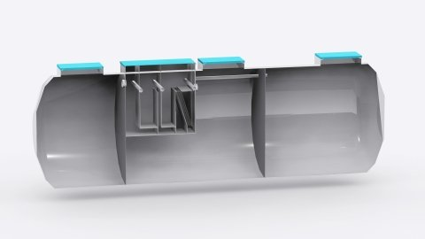
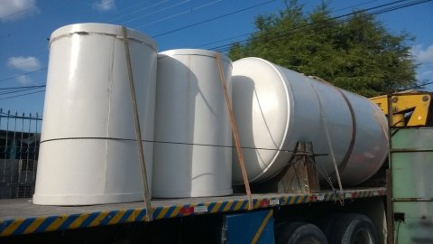
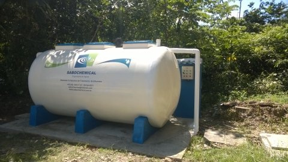

Caixa separadora de água e óleo
Sistema para separação e retenção de resíduos oleosos.
Projetos realizados
Portfólio de soluções executadas em tratamento de água, efluentes, reuso, separação água/óleo e fabricação sob medida.

Sistema para separação e retenção de resíduos oleosos.

Componentes e estruturas fabricadas conforme demanda operacional.

Implantação de tratamento de efluentes para operação local.
Vídeos técnicos sobre tratamento de água e separação água/óleo.